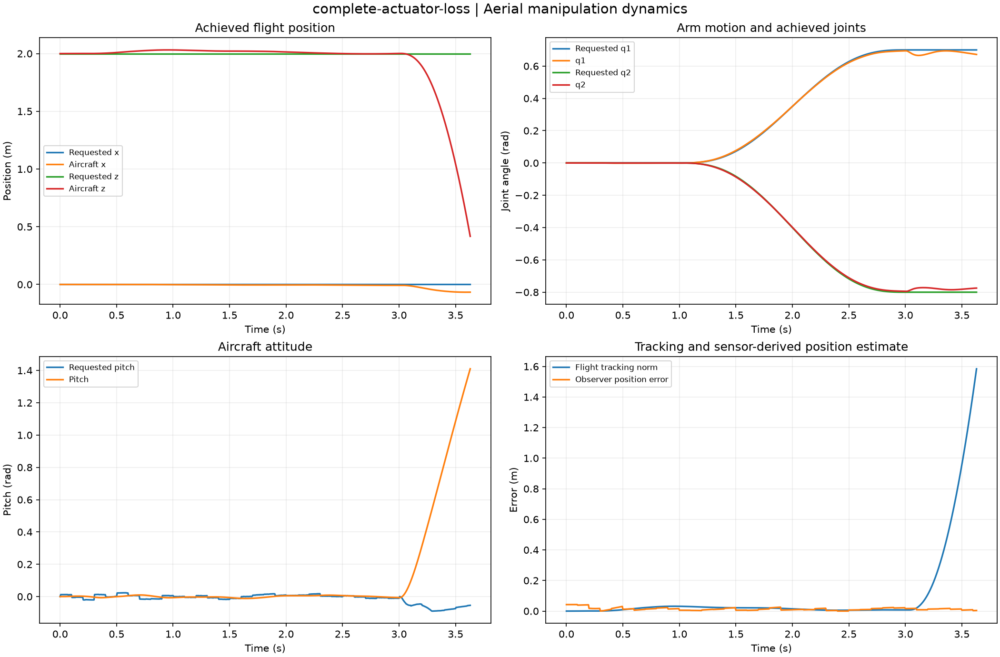

Reproducible Aerial manipulation dynamics. Units and field components are printed on the scientific axes. peak d-q quantities use exp(+i omega t); terminal currents point into the protected line.
Sealed numeric archive | Summary CSV | Physical parameters | Run request | Source and environment

| achieved_duration_s | 3.63 |
|---|---|
| arm_rmse_rad | 0.009139451102382552 |
| completion_fraction | 0.605 |
| electrical_wh | 0.2782622791886294 |
| final_arm_error_rad | 0.03772396765204984 |
| maximum_allocation_residual_n | 56.028061046419914 |
| maximum_mechanical_defect_j | 1.0569371853424991e-10 |
| position_rejections | 0 |
| position_rmse_m | 0.20299123019330523 |
| termination | flight-envelope-exceeded |
These are simulations, not hardware measurements. Network-model, measurement, timing and statistical uncertainty require distinct convergence checks. Singular or unilluminated data use explicit masks.
Source revision: 4098e4e4fa0f02760b06b365a66778514870c60b.
Dirty checkout: False.
Configuration SHA-256: daf485628a6b06fcb4dac2ceb89560a287896b5dedb4ef0775d2533f95d9ccea.
Replay preserves original source and parameter provenance. SHA-256 manifests detect changed bytes; they are unsigned integrity records, not certificates of physical validity.